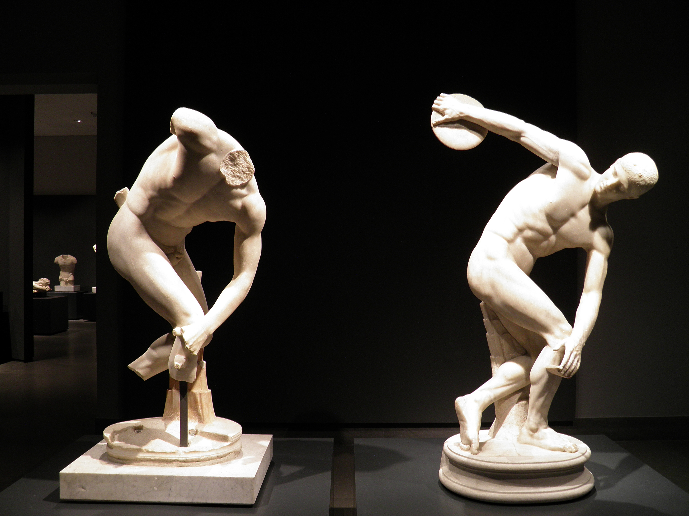

Discobolus (dis-KOB-oh-lus)
Greek for “discus thrower.” It is also the common name for Myron’s famous sculpture of a discus-throwing athlete.
Myron · original circa 460–450 B.C.E. · Roman marble copies

The Greek sculptor Myron carved the Discobolus, the Discus Thrower, in bronze around 460–450 B.C.E., at the start of the Classical period. The original bronze is lost. What survives are Roman marble copies, carved centuries later for Roman patrons who admired the lost Greek original.
Where the kouros stood frozen, this body moves. Myron’s breakthrough was to pick one moment in the arc of an action and hold it still: the top of the backswing, when the discus is poised and the whole body is coiled. This was a new idea in European sculpture, and it opens the Classical period.
Greek for “discus thrower.” It is also the common name for Myron’s famous sculpture of a discus-throwing athlete.
The era of Greek art from about 480 to 323 B.C.E., when sculptors broke out of the stiff Archaic pose and began carving bodies as they move, breathe, and shift weight. It also became the model for later “classical revivals,” including the Renaissance.
A marble copy of a Greek bronze sculpture, made by Roman artists between about 100 B.C.E. and 200 C.E. Nearly every Greek bronze was melted down over the centuries, so many “Greek” sculptures in museums today are Roman copies of lost originals.
Myron’s discovery that one frozen moment can hold a whole action becomes an engine of later sculpture. Within this deck, Doryphoros shows the body at rest and introduces contrapposto. Much later, you will meet Michelangelo’s Sistine Chapel ceiling in the Renaissance deck and Bernini’s dramatic sculptures in the Baroque deck. Both push this sense of movement even further.